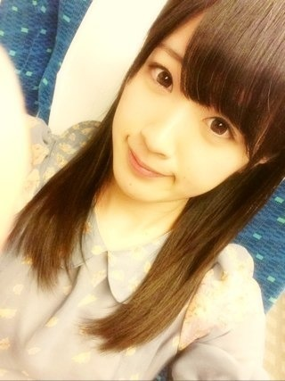
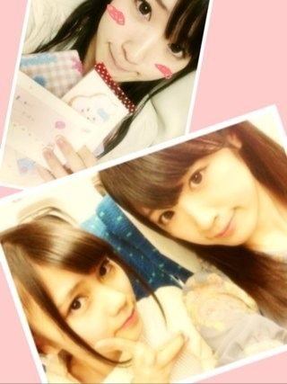
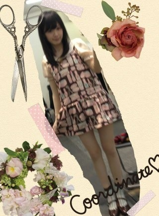
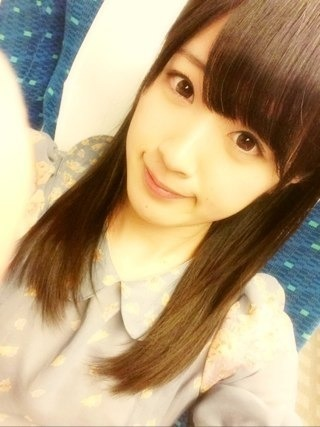
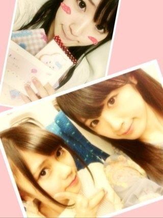
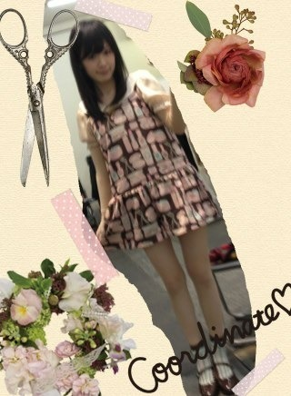

2013/0217Sun（´-`）.｡oO(かずみん×142
こんばんは！
いつも応援ありがとうございます(^-^)

昨日、今日と握手会でした！
誕生日を沢山の方々が祝福してくださって
とても嬉しかったです(*^_^*)
途中、咳が出てファンのみなさんに
心配をかけてしまってすみませんでした...
22日のライブまでに治さないと！
女の子のファンも沢山増えて...
ミニ個握京都では考えられないくらい
沢山の方が来てくれました(^-^)
昔からずーっと来てくれてる人、
初めて来てくれる人、
本当に本当に
助けられてます。
ありがとうございました！！
相方の陽菜ちゃんからも
プレゼントやら手紙やらを
授かりました(T_T)♡

嬉しかったっす☆
ありがとう(*^_^*)
皆さんに支えられながら、
高山も自分を向上させられるように
頑張ります( ´ ▽ ` )
-------
そして、今日の乃木どこは
生誕祭！！！
あぁ...
私の習って間もない声楽の
動画がでると思うのですが、
下手すぎて、みんなにみて欲しく
ありません((((；ﾟДﾟ)))))))
本当下手っぴ！！
習ってから4年弱だったのですが、
まだ習って数ヶ月しか経ってないころ
のVTRが流れるなんて...
理由はその年以降の発表会は
父が遅れてビデオが
回せなかったからです。
ふぁあ(´･_･`)
ある意味お楽しみに！笑
それでは、今日はこの辺で♪
最後に今日のコーディネート♪

エミキュのワンピです♪
またね( ´ ▽ ` )ﾉ
いつも応援ありがとうございます(^-^)

昨日、今日と握手会でした！
誕生日を沢山の方々が祝福してくださって
とても嬉しかったです(*^_^*)
途中、咳が出てファンのみなさんに
心配をかけてしまってすみませんでした...
22日のライブまでに治さないと！
女の子のファンも沢山増えて...
ミニ個握京都では考えられないくらい
沢山の方が来てくれました(^-^)
昔からずーっと来てくれてる人、
初めて来てくれる人、
本当に本当に
助けられてます。
ありがとうございました！！
相方の陽菜ちゃんからも
プレゼントやら手紙やらを
授かりました(T_T)♡

嬉しかったっす☆
ありがとう(*^_^*)
皆さんに支えられながら、
高山も自分を向上させられるように
頑張ります( ´ ▽ ` )
-------
そして、今日の乃木どこは
生誕祭！！！
あぁ...
私の習って間もない声楽の
動画がでると思うのですが、
下手すぎて、みんなにみて欲しく
ありません((((；ﾟДﾟ)))))))
本当下手っぴ！！
習ってから4年弱だったのですが、
まだ習って数ヶ月しか経ってないころ
のVTRが流れるなんて...
理由はその年以降の発表会は
父が遅れてビデオが
回せなかったからです。
ふぁあ(´･_･`)
ある意味お楽しみに！笑
それでは、今日はこの辺で♪
最後に今日のコーディネート♪

エミキュのワンピです♪
またね( ´ ▽ ` )ﾉ
2013/02/17 20:12


コメント(738)
また、いくのでまっててください
ワンピ可愛い！
アメージング！
生誕祭
ちゃんと録画しなきゃ汗
楽しみー！！
ではでは。
今日も1日がんばりまいやん！！
かずみん大好き♡
これからよろしく
握手会行きたかったorz
今度絶対行く笑
今日は一緒にアメイジングしていただいてありがとうございます(^O^)
また行くんで覚えといてください♪
また行くね
乃木どこ？楽しみ♪
お疲れかずみん！
今日の生誕祭楽しみ！！
幕張も楽しみだな。
あと１ヶ月
そしてかずみん染めた？？
写真だいぶ茶色いなぁって
黒髪がこれ以上へったら悲しいよ(´；ω；｀)
握手会お疲れ様ー
体調には気をつけてね
今日の乃木どこ楽しみ!
可愛い♥
握手会行きたいなぁ♪( ´▽｀)
体調大丈夫？
ごめんね。無理させてしまって。。
でも4thは、かずみさんともっともっと仲良くなれた気がする。
かずみさんを支えたい気持ちになったよ。
5thもよろしくお願いします。
誕生日改めておめでとう！
大好きかずみさん
更新待ってたーぜぜぜぜ ぜーい＼(^o^)／
生誕祭楽しみだわさ(*^^*)
それとかずみんかわいー(ﾉ´∀｀*)
大好きですよー(*´Д｀)
お仕事頑張ってね！
これからも応援してるよ(^○^)
ではまたねー(^^)/
また次の更新待ってるよっぴーだったとさ(*ﾟ∀ﾟ)ﾁｬﾝﾁｬﾝ♪
ちょっとおくれたけど誕生日おめでと੬͑३ુ͗ ᷅ ᷅ ᷆ ̑ ͡ ̑᷄ ̮̑͜ ̇ू ᷅͡ ̑ ̆ ̆३ુ͗३ુ͗ゥフフ 京都行きたかったなー会いたかったなー⁽⁽(*꒪ั❥꒪ั*)⁾⁾
きのうは、楽しかったよー
初めてだったけど、たくさん話せて嬉しかった♡
中学で、あんまいけなくなるけど、いけるときはいくねっ♪
かずみん大好きっっ
お疲れ様♪
久々にいっぱい行って楽しかったわ
とりあえず疲れたから寝るわ
かずみん喉大丈夫？
体調には気を付けてな
お疲れ～
ほなねﾉｼ
かずみーーん！！
昨日、握手会にいました、
かずみんのとこには、いけなかったけど、今度いくよ
かずみん可愛いすぎる！！
体調大丈夫ですか?忙しいと思いますが、気を付けて頑張って行きましょう！
乃木どこ生誕祭、超楽しみです。（ある意味の所がむしろ楽しみ笑）また見た後に、コメントしますので。
ワンピ可愛いすぎ！
ごめんねｗ
次の握手会楽しみにしているね
行きたかったなーT^T
俺は愛知で待ってるからねー！
乃木どこ絶対見るからねー☆*:.｡. o(≧▽≦)o .｡.:*☆
じゃあまたコメするねっ（≧∇≦）
今日の乃木どこ見るよ!!
今日の生誕祭楽しみです(^w^)
今日は自分は大学に向け、住むアパートを決めたところです(^〇^)
新生活不安だけど頑張ります！
ワンピース凄い似合ってます(^o^)v
握手会おつかれー(=^ェ^=)
ライブファイト*\(^o^)/*
握手会二日間お疲れ様でした
ぽーるだけど憶えててくれてるかな？
かずみさんと楽しい時間を過ごす事が出来て嬉しかったです。
さすがにカキフライ20個食べたと言った時は驚きましたが
今日は生誕祭ですね
乃木どこを楽しみに待ちたいと思います。
かずみさん体調崩しちゃった？
会場が肌寒かったけど、かずみさん風邪ひいちゃったかな？
身体を暖かくして、ゆっくり休めてくださいね
ではでは、本当にお疲れ様でした
昨日は握手会楽しかったです(￣∀￣)∩
京都は行ってはいないけど楽しかったみたいで良かったです♪
乃木どこ‥
フフフ(￣∀￣)
もちろん録画もしてオンタイムで観るぜ！？
。
斬新ワンピ(^O^)
また
ライブで会いましょう(*^o^*)
パシフィコでは改めてありがとうございます！！
じゃねw
2日間ホントにご苦労様だね(^o^)v
昨日はヤバイ楽しかったな～♪♪
3月も握手会行くから、
今からすげぇ楽しみだ～(*^^*)
もちろん、今日の生誕祭
きっちり見るよ!!
子供時代、きっと半端ない可愛いだろうな～(#^.^#)
乃木坂46全体で女の子のファンが増えるといいね
ゆうし。だよーぃ！
昨日今日は行けなくてごめんね
5thは関東全部行くからね！
一実しかだよ！
待っててください！
今日の乃木どこ、楽しみにしてます！
握手会、おつかれさん。
来週末のライブは、いきます！
こんばんは♪
握手会お疲れ様です(*^^*)
自分は横浜の１部に行きました(笑)
やっぱり、かずみんはメッチャクチャ可愛かったです(照)
5thシングルも行くのでよろしくお願いしますm(__)m
明日も頑張ってください(^-^)/
では、お休みなさい(-.-)Zzz・・・・
ブログ毎回楽しみに見てます！
今日の乃木どこ絶対見ます(^-^)/
いつも乃木どこは録画してあるのですがリアルタイムでも見てます、そして学校から帰ってきたらもう一回見てるんですぅ笑
かずみさんが肘こすってる所めっちゃ好きです(^-^)/
握手会お疲れさま！！
行けなくてごめんね(´；ω；｀)
行きたかったなぁ…
次会えるの名古屋の握手会！って言ってたけど、１周年ライブ行けるようになったから、もうちょっとで会える(・∀・)
名古屋から幕張まで行くよー♪♪
すっごい楽しみヾ(*´∀｀*)ﾉ
体調気を付けてね！
まずはかずみんの体が大丈夫じゃないと(´・ω・｀)
無茶せずにかずみんらしく頑張って♪
握手会行きたかったなーT^T
俺は愛知で待ってるからねー！
乃木どこ絶対見るっ♡
楽しみ♡
じゃあまたコメするねっ☆*:.｡. o(≧▽≦)o .｡.:*☆♡
私服可愛い
うちに買って(笑)
そして昨日はありがとう！
誕生日のお祝いを直接言えて嬉しかったし、
素敵な1年にして下さいねって言ったら、
ギュッと握り返してくれたので、凄く嬉しかった！
ちゃんと目を見て話し聞いてくれてありがとう。
もう、ありがとうしか言えません。
今日の乃木どこも楽しみにしてます。
気をつけて帰ってきて下さい。
ライブに向けて、体調も整えて、最高のパフォーマンス見せてね！
でわでわ( ´ ▽ ` )ﾉ
今日の京都の握手会行きました♪
髪巻いてたぱっつんの人です←
今日、初めましてだったんですけど
すっごい生で見たらさらに可愛くて
今まで握手会行かなかったこと後悔したくらい!!
これからもいっぱい行きます♪
本当にありがとうございました＊°
私服、可愛かったです(*^^*)
乃木どこ楽しみです！
アメイジング＼(^o^)／＼(^o^)／
はい!昔からのファンです♪笑
横浜はかずみん落選して取れなかったけど今日はたくさんお話できて楽しかったー＼(^o^)／
来週のライブちゃんと見に行くから頑張ってね!
今日はゆっくり休んで疲れを取ってくださいな＼(^o^)／
かずみん大好き＼(^o^)／
ゆみちでした(・∀・)
ツゲショーです！
初コメ！
横浜の握手楽しかったよ！
笑顔が素敵とかお洒落とか言われて釣られかけた笑
レーンの外からずっと手振ってたの覚えててくれててうれしかった！
これからもちょくちょく取るね！
4ヵ月振りの握手会だったけど、凄く楽しかったです!!
覚えてくれててありがとう!!
めっちゃ嬉しかったです!!
就活が始まるから、今日で握手するの最後だったけど、今までありがとう!!
就活を応援してくれてありがとう!!
ライブは行くから楽しみにしてます!!
また会う日まで。
へばっまずな(^-^)/~~
ヤッシーでした(^^ゞ
俺的には長い方が好きだから、切らないで欲しいなｗ
じゃあ、ないなら。
こんばんわ＼(^_^)／
握手会参加できず
ごめんねf(^_^;
友達に風邪と聞いた時は心配でしたよ～(泣)
まずは健康第一ですよ♪
でわでわ～
(^_^)/~~
最近就活で追い込まれてるんよorz
就活終わったら個別行くからね!!
かずみん、足細すぎるね。もう少しあっても良いと思う!!
次は法被着て行こうと思ってるから認知よろしく(^O^)
めっちゃ楽しかったで‼
5thも行こうと思ってるから(o^^o)
ほんじゃ〜しっかり休んでな(o^^o)
かずみんにゃー
オシカレオットセイ
30歳オメデタ言って怒られましたｗｗ
かずみんに行ったりいかなったたりでてゴメンね
でもちょくちょく顔は出しますからコレからも宜しく(・∀・＞)ぴーす
頑張ってね
バイにゃー
コメントする